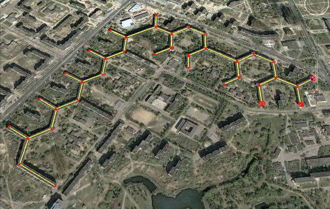
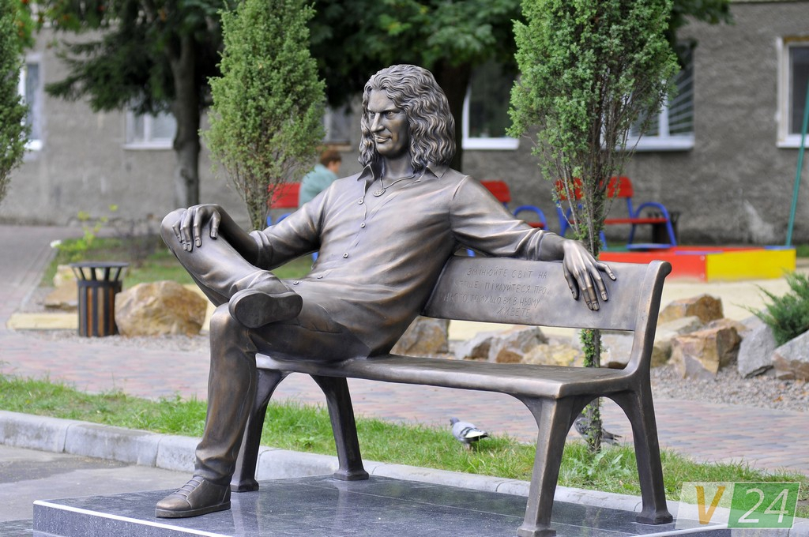
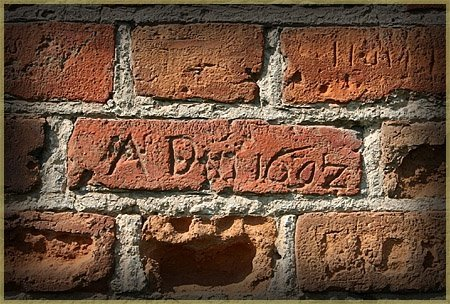

Хоч Луцьк не таке вже й популярне місто та воно приховує в собі цікаві факти, деякі з них навіть мешканці міста не знають.
У Луцьку знаходиться найдовший житловий будинок в світі. Він тягнеться по проспектах Соборності та Молоді й має форму бджолиних стільників. Довжина по осі — 3265 м, по 1 лінії — 1750 м. Збудований в 1969—1980 роках. Має 88 під'їздів, які об'єднані в 38 адрес на двох вулицях. Населення на початок 2015 року — 9150 мешканців.
Пам'ятник Андрієві Кузьменку — пам'ятник українському співакові, телеведучому, продюсерові, актору, солісту гурту «Скрябін» — Андрієві Кузьменку. Розташований в місті на території рекреаційної зони «City Park».
У 2014-2015 рр Луцьк разом з містом Рівне було визнано найбільш україномовним містом. 97% лучан спілкуються вдома українською мовою.
У Луцьку знаходиться єдиний в Україні музей, де зберігається колекція старовинних регіональних ікон - Музей волинської ікони, сонячний годинник «Парад планет» – єдиний в Україні годинник, створений у такому стилі та єдиний в Україні музей дзвонів

“А в тому Луцьку та все не по-людськи: довкола вода, а в середині біда” - така приказка була розповсюджена серед лучан у 19 ст.
Понад 410 років - стільки найстарішому надпису на стінах Луцького замку (1602 р.)
